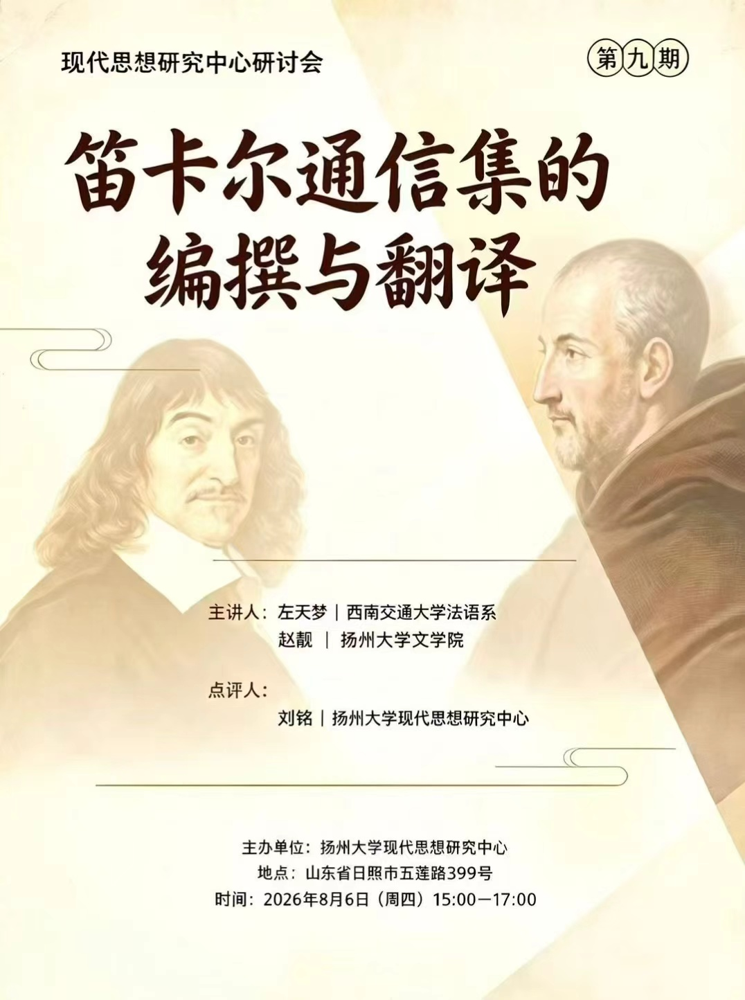

活动概述
2026 年 8 月 6 日，扬州大学社会发展学院现代思想研究中心在山东日照举办“笛卡尔通信集的编纂与翻译”研讨会。会议围绕勒内·笛卡尔（René Descartes）通信集的历史编纂和学术意义，以及中文版的文献基础、版本选择、编排体例、翻译规范和研究转化展开交流，并就样本先行、统一标准、专业分工和分步出版形成阶段性思路。
从通信网络到中文编纂
西南交通大学法语系主任左天梦指出，笛卡尔所处的 17 世纪前半叶尚无现代学术期刊和即时通讯，书信是知识流动与学术交往的重要载体，也能呈现思想形成、修改和传播的动态过程；今天所见的笛卡尔书信又多经过抄写、转录和编辑，并不等同于未经中介的原始手稿。因此，阅读或翻译通信集不能只是转译某一种现代版本，而应辨析文本传承和版本差异。
左天梦结合法语、英语、意大利语等版本，并以马兰·梅森（Marin Mersenne）组织《第一哲学沉思录》“反驳与答辩”为例，说明 17 世纪的书信如何参与现代思想的形成、传播和接受。
刘铭梳理了早期克洛德·克莱尔瑟利耶（Claude Clerselier）、阿德里安·巴耶（Adrien Baillet）等文本收集情况，延伸至 AT 版及当代多语种笛卡尔书信版本的编纂特点，尤其介绍了朱莉娅·贝尔焦约索（Giulia Belgioioso）主编的意大利文《全部书信（1619—1650）》、让-罗贝尔·阿尔莫加特（Jean-Robert Armogathe）主编的法文《笛卡尔书信全集》（2013）及牛津英文拟三卷本 René Descartes: The Complete Correspondence in English Translation。这些不同语种的版本体现了不同的收录、分组和注释思路，可为未来中文版本确定编排尺度提供参照。
伊丽莎白通信的思想价值
扬州大学文学院赵靓重点讨论笛卡尔与波希米亚公主伊丽莎白（Elisabeth of Bohemia）的通信。她指出，伊丽莎白围绕身心相互作用、身体健康与激情调节的追问，推动笛卡尔更充分地阐释身心统一，并为研究《论灵魂的激情》的形成提供重要线索。
赵靓介绍了笛卡尔 33 封和伊丽莎白 26 封书信的大致分类与内容，并把笛卡尔与海因里希·雷吉乌斯（Henricus Regius）的通信同伊丽莎白通信作对照，强调后期伦理思考并非对早期形而上学的突然否定，而是对实在区分与真实身心统一关系的进一步展开。她同时讨论了笛卡尔围绕伊丽莎白忧郁与身体不适提出的注意力调节、意志训练等“灵魂疗法”。刘铭则援引“哲学之树”的整体计划说明，笛卡尔以形而上学为根、物理学为树干，并重视医学、机械学和道德学等实践性分支。
翻译计划与后续安排
在最后的讨论环节，中心成员在梳理笛卡尔通信集内容的基础上，决定将通信集翻译工作提上日程，逐步筹划编年体全集和索引工具的编制。后续将通过正式方案进一步落实人员、工作量与时间节点，尽快形成研究与翻译相互促进、国内外学者共同参与的工作模式。